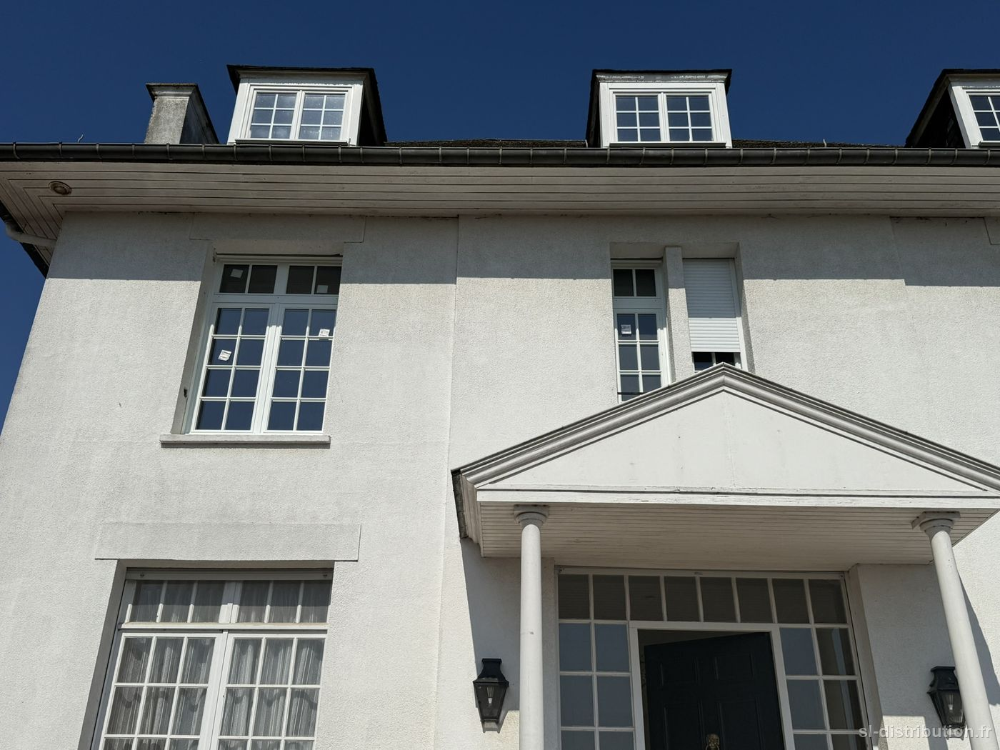
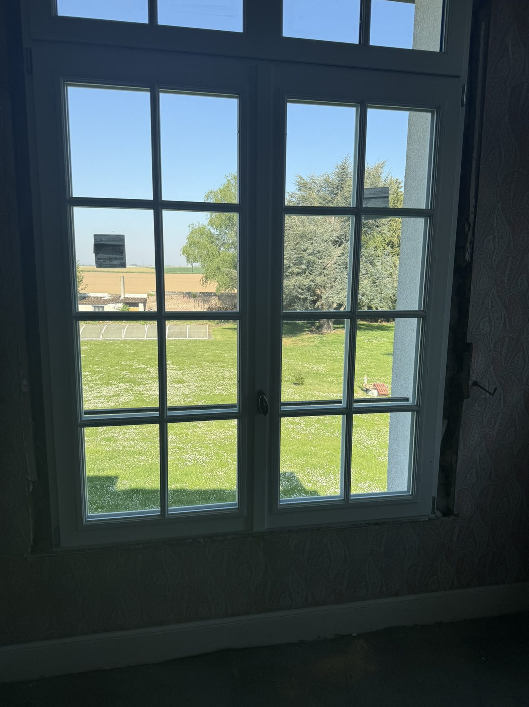
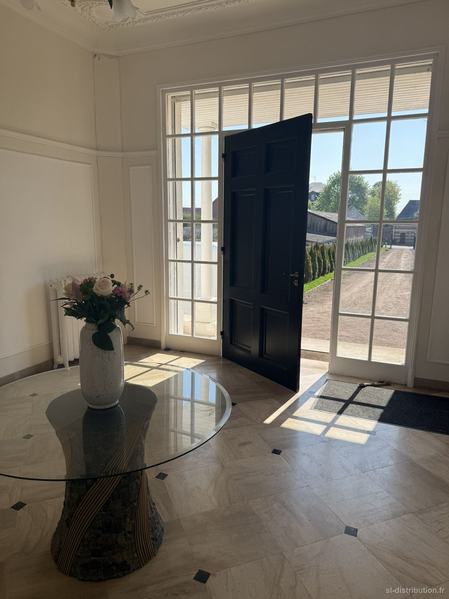
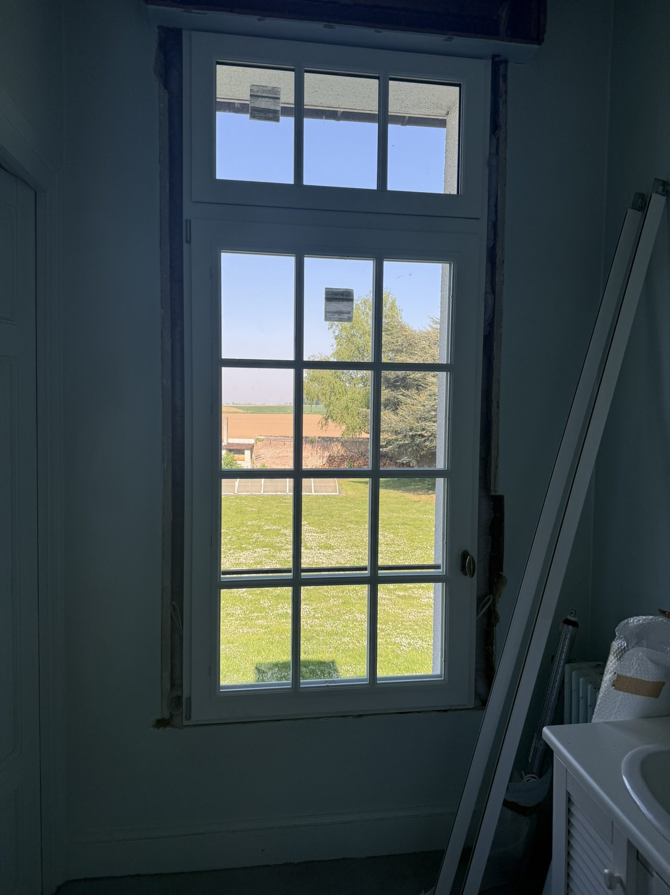

Avesnes-le-Sec
Une maison de maître au style manoir, dont les menuiseries bois ont été remplacées par des menuiseries bois neuves, à l'identique de l'esprit d'origine.
C'était une première pour moi — et une réalisation dont je suis fier, avec un client très satisfait. Le bois demande un autre niveau d'exigence, et c'est exactement le genre de chantier qui fait progresser.



